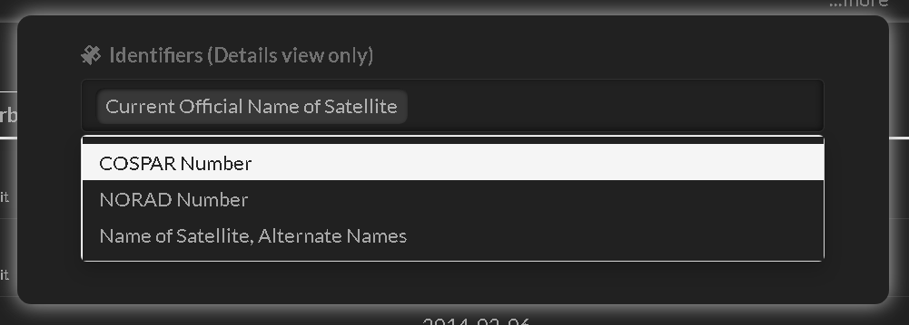
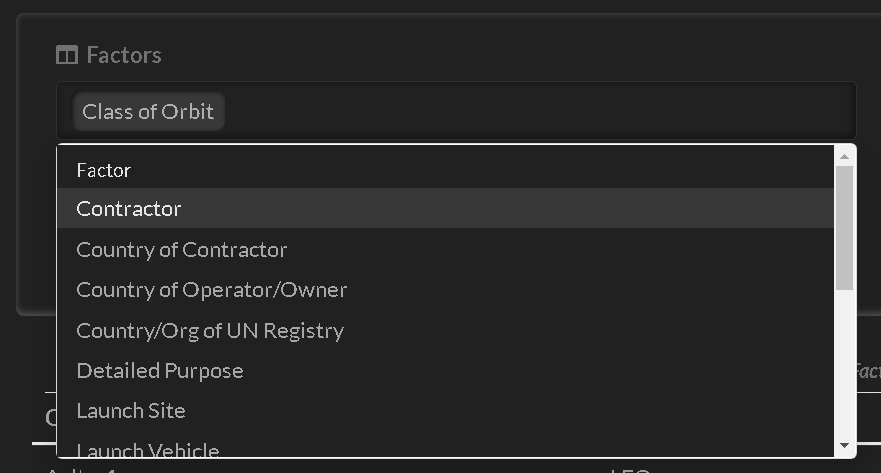
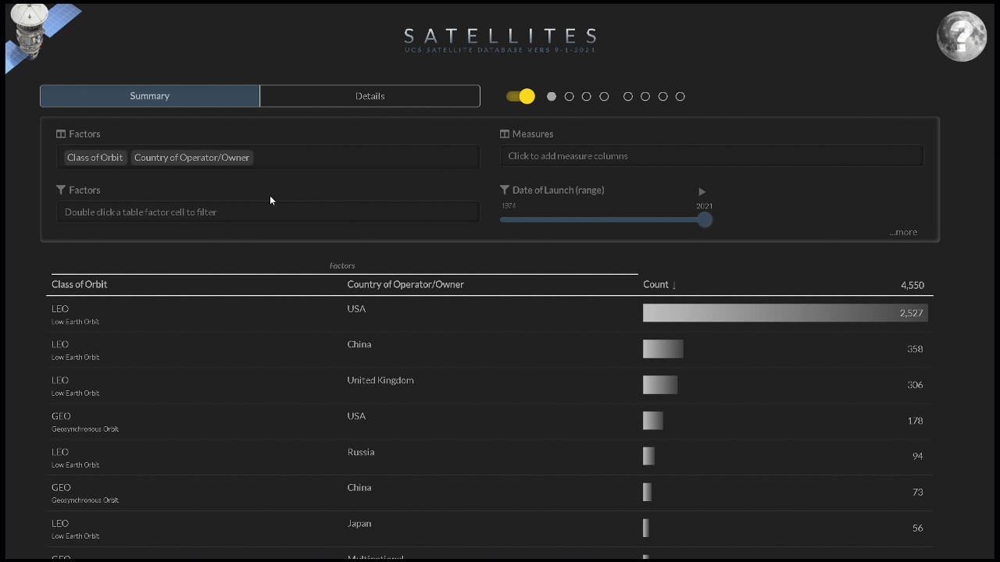
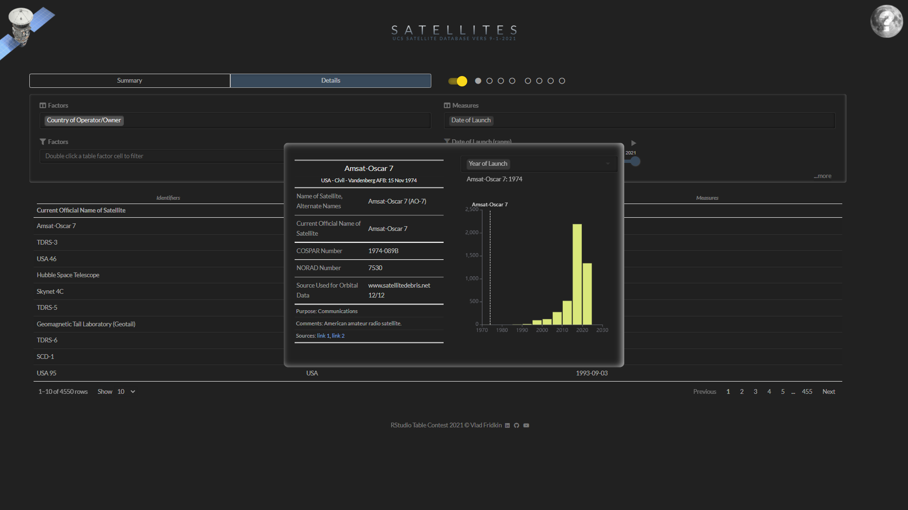

Satellites is an interactive table app for analysing satellites that are currently orbiting the Earth.
Data is sourced from the Union of Concerned Scientists (UCS) UCS Satellite Database
View aggregated statistics (summary)
View individual records (details)
Add and reorder columns
Filter by double clicking
Add cell bars
Animate measure range
Change the measure statistic
Save all the above in up to eight custom views
Choosing the view, selecting columns, filtering and more is done with the control panel. If hidden, use the 'sun' switch to reveal (it is left of the eight 'planet' icon buttons).

The table has three types of columns:
Columns of the same type are positioned together in this order: Identifiers | Factors | Measures
Summary factor columns are on the left and aggregated measures are on the right side of the table.
Details identifier columns on the left, followed by factors and then measures on the right side of the table.
The summary view does not contain identifiers. The details view does not contain the count column.
The 'sun' switch hides/shows the concealable controls.
Eight circles (the 'planets') store eight sets of table views including summary/details selection, selected columns, filters, measure statistic and cell bar choices.
Saving is automatic, click the little circles to move between configurations.
Identifiers can only be seen in the 'Details' view. At least one factor is always shown. Measure columns are optional.
To select identifier columns, click on '...more' (bottom right corner of controls) to reveal additional controls.

Click insider the Identifiers selector and select the identifier columns you want added to the table.
Drag and drop the selected identifiers to reorder the columns in the table.
Selecting factors is similar to identifiers, and columns can be reordered with drag and drop too.
There are many factors to choose so scroll down and you'll find convenience commands that select all, inverse and clear the selection.

Clearing will leave one factor remaining - it is a requirement of the table.
Measures are selected similar to factors, columns reordered with drag and drop and convenience commands when you scroll down.

When a selected measure is double clicked, it replaces the measure in the slider.
Factors and measures can be filtered.
Double click on a table cell in a factor column. It sends the filter to the factor filter selector.

Filters are removed with the keyboard delete key. They are saved in filter choices for later use - for example if you wanted to...
To have the same factor column filtered multiple times we'll have an example.
Let's say we want to view only military and commercial satellites.
The measure appearing in the slider label can be filtered by moving the slider knob. The slider is animated leading to some cool effects when combined with cell bars.
There are four measure statistics to choose from:
When showing standard deviation for dates, the unit of measure changes to days.
Sort by clicking on the headers, shift-click to sort by multiple columns. This is standard reactable behaviour.
Months are sorted by calendar order. Discover which month has the most launches.
Which country has the most satellites?
Which contractor is responsible for the most satellites?
Which is the oldest satellite orbiting the Earth?

Which is the heaviest?
Which is the furthest?
The sort order is saved on changes to the table.
Hover over column headers to reveal descriptions.
Click on identifiers to view comments, links to sources and a comparison to other satellites.
Select different measures to compare the selected satellite to all the satellites.
Control which measure columns have cell bars using the additional '...more' control panel.

Cell bars implementation is a custom feature of the app in order to improve rendering speed.